Capítulo 13 Regresión lineal
En el capítulo 11 dedicado al análisis bivariable se indicó que el inicio de la relación entre dos variables era la correlación, pues la regresión lineal es el principio de la modelización estadística. Evidentemente no es lo mismo pero establecer una analogía entre ambos conceptos permite entender los objetivos de la regresión lineal:
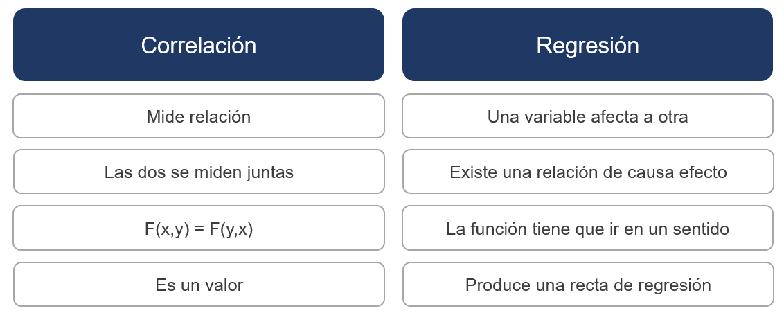
En este enlace de la recomendada web de Joaquín Amat se trata con mayor detenimiento esta relación. Como se indica en la figura ahora es una variable la que afecta a otra y es necesario crear una recta de regresión que exprese como se modifica una variable dependiente en función de otra variable independiente o regresora, si sólo hay una variable independiente se trata de un modelo de regresión lineal simple, si hay más de una variable es un modelo de regresión lineal múltiple.
13.1 Modelo de regresión lineal simple
La variación de una variable afecta a otra según una función lineal por lo que será necesario crear esa función, calcular los parámetros más adecuados para esa función, decidir si esos parámetros se adecuan o no y medir si el modelo es correcto. Es decir, para plantear un modelo de regresión lineal simple es necesario seguir los siguientes pasos:
Escribir el modelo matemático
Estimación de los parámetros del modelo
Inferencia sobre los parámetros del modelo
Diagnóstico del modelo
Es el modelo más sencillo ya que gráficamente se puede intuir como va a ser esa relación lineal. En este caso, no es posible seguir el ejemplo de trabajo que sirve de hilo conductor del ensayo y por ello es necesario emplear otros datos.
# install.packages("skimr")
library(skimr)
library(tidyverse)
cost_living <- read.csv("./data/Cost_of_living_index.csv")
skim(cost_living)| Name | cost_living |
| Number of rows | 536 |
| Number of columns | 8 |
| _______________________ | |
| Column type frequency: | |
| character | 1 |
| numeric | 7 |
| ________________________ | |
| Group variables | None |
Variable type: character
| skim_variable | n_missing | complete_rate | min | max | empty | n_unique | whitespace |
|---|---|---|---|---|---|---|---|
| City | 0 | 1 | 10 | 37 | 0 | 536 | 0 |
Variable type: numeric
| skim_variable | n_missing | complete_rate | mean | sd | p0 | p25 | p50 | p75 | p100 | hist |
|---|---|---|---|---|---|---|---|---|---|---|
| Rank | 0 | 1 | 268.50 | 154.87 | 1.00 | 134.75 | 268.50 | 402.25 | 536.00 | <U+2587><U+2587><U+2587><U+2587><U+2587> |
| Cost.of.Living.Index | 0 | 1 | 57.19 | 19.98 | 19.26 | 39.37 | 61.97 | 70.86 | 137.56 | <U+2587><U+2587><U+2587><U+2581><U+2581> |
| Rent.Index | 0 | 1 | 25.21 | 16.45 | 3.43 | 11.69 | 23.09 | 33.44 | 106.49 | <U+2587><U+2586><U+2581><U+2581><U+2581> |
| Cost.of.Living.Plus.Rent.Index | 0 | 1 | 42.05 | 17.46 | 12.36 | 26.65 | 44.45 | 53.09 | 121.21 | <U+2587><U+2587><U+2582><U+2581><U+2581> |
| Groceries.Index | 0 | 1 | 49.76 | 19.32 | 18.01 | 31.50 | 51.57 | 62.76 | 127.35 | <U+2587><U+2587><U+2585><U+2581><U+2581> |
| Restaurant.Price.Index | 0 | 1 | 54.68 | 25.09 | 11.93 | 31.55 | 59.41 | 72.34 | 151.77 | <U+2587><U+2586><U+2587><U+2581><U+2581> |
| Local.Purchasing.Power.Index | 0 | 1 | 89.49 | 37.04 | 2.24 | 56.79 | 94.10 | 119.50 | 186.00 | <U+2582><U+2587><U+2587><U+2587><U+2581> |
Se trata de un conjunto de datos extraído de Kaggle que dispone de un índice del coste de la vida para 536 ciudades donde Nueva York es la base que relativiza el índice, es decir, si una ciudad tiene un valor de 120 en un dato este está un 20% por encima de Nueva York. No se realiza un análisis EDA, en su lugar se emplea la librería skim para obtener los estadísticos básicos que permitan describir las variables disponibles que se definen del siguiente modo:
Rank: posición de la ciudadCost.of.Living.Index: (excluido el alquiler) es un indicador relativo de los precios de los bienes de consumo, incluidos comestibles, restaurantes, transporte y servicios públicos. El índice de costo de vida no incluye gastos de alojamiento como alquiler o hipoteca.Rent.Index: es una estimación de los precios de alquiler de apartamentos en la ciudad en comparación con la ciudad de Nueva York.Cost.of.Livin.Plus.Rent.Index: El índice del costo de vida más el alquiler es una estimación de los precios de los bienes de consumo, incluido el alquiler, en comparación con la ciudad de Nueva York.Groceries.Index: El índice de comestibles es una estimación de los precios de los comestibles en la ciudad en comparación con la ciudad de Nueva York. Para el cálculo se usan pesos de artículos en la sección “Mercados” para cada ciudad.Restaurant.Price.Index: El índice de restaurantes es una comparación de precios de comidas y bebidas en restaurantes y bares en comparación con la ciudad de Nueva York.Local.Purchasing.Power.Index: muestra el poder adquisitivo relativo en la compra de bienes y servicios en una ciudad dada por el salario promedio en esa ciudad. Si el poder adquisitivo doméstico es 40, esto significa que los habitantes de esa ciudad con el salario promedio pueden permitirse comprar en promedio un 60% menos de bienes y servicios que los residentes de la ciudad de Nueva York con un salario promedio.
En este ejercicio se pretende crear un modelo de regresión lineal simple que permita estimar el indicador del costo de la vida en función del precio del alquiler. Siguiendo los pasos necesarios para realizar el modelo se tiene:
- Modelo matemático. El modelo será \(Y = \beta_0 + \beta_1X + \epsilon\) Esta fórmula que recuerda a la ecuación punto pendiente de una recta es el principio de la modelización estadística y tiene en pocos componentes todo lo necesario para comenzar a entender como funciona. Se desea estimar el valor de \(Y\) que es la variable dependiente costo de la vida por ciuidad, para estimar ese valor se crea una recta de regresión que empieza, que corta el eje desde un punto inicial \(\beta_0\) y tiene una pendiente \(\beta_1\) que modifica linealmente \(X\), la variable independiente pero no es posible que el modelo describa perfectamente la variable dependiente y por ello aparece el término error \(\epsilon\). En el ejemplo de trabajo la función sería Cost.of.Living.Index = \(\beta_0\) + \(\beta_1\)*Rent.Index + \(\epsilon\)
Este modelo matemático implica que la variable dependiente se modifica en función de una variable independiente de forma aditiva, recordando temas anteriores, ¿que distribución se modificaba de forma aditiva? La distribución normal, la variable Cost.of.Living.Index ha de distribuirse normalmente. Para comprobar si una variable sigue una distribución normal se puede emplear el gráfico de densidad:
cost_living %>% ggplot(aes(x = Cost.of.Living.Index)) + geom_density()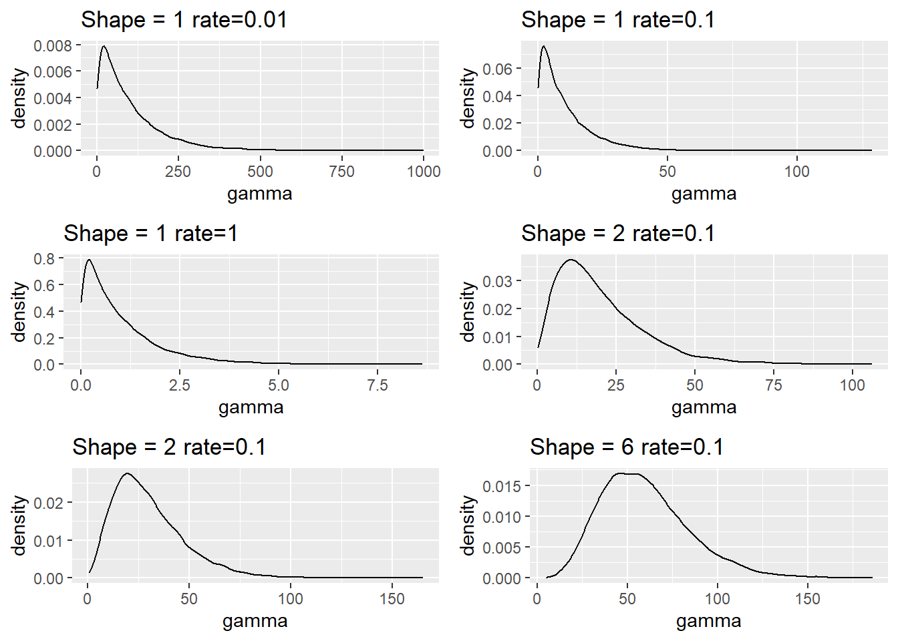
No se distribuye normalmente y para corroborarlo se disponen de gráficos QQ que compara los cuantiles de la distribución normal frente a los cuantiles de la distribución de una variable.
qqnorm(cost_living$Cost.of.Living.Index)
qqline(cost_living$Cost.of.Living.Index)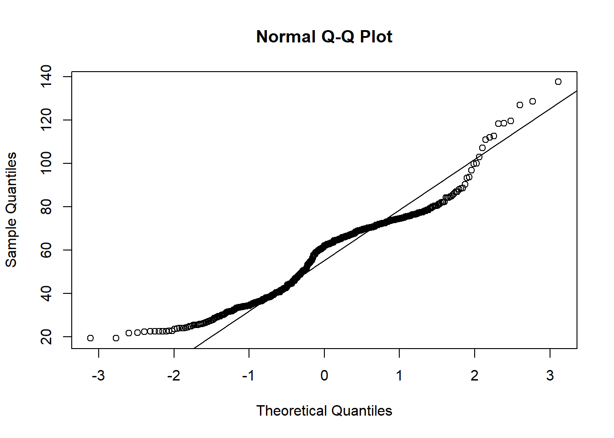
Más que evidente que no se distribuye normalmente ya que los muchos puntos de la distribución están alejados de la recta que marca los cuantiles teóricos de la distribución normal. Entonces, ¿no es posible realizar un modelo lineal?. Se calcula el coeficiente de correlación lineal entre las variables:
cor(cost_living$Cost.of.Living.Index, cost_living$Rent.Index)## [1] 0.8133299¿Con un coeficiente de correlación lineal superior a 0.8 no va a ser posible crear un modelo de regresión lineal? Si es posible, porque el científico de datos busca separar el azar de lo estadísticamente significativo, en su trabajo diario no va a realizar modelos teóricos ideales.
- Estimación de los parámetros del modelo. Los parámetros son esos elementos \(\beta\) presentes en la definición del modelo. Esta labor se realiza mediante mínimos cuadrados que es el proceso de modelización estadística más sencillo y para entender como funciona se parte del gráfico de pares de puntos [Rent.Index , Cost.of.Living.Index]
cost_living %>% ggplot(aes(x = Rent.Index, y = Cost.of.Living.Index)) +
geom_point()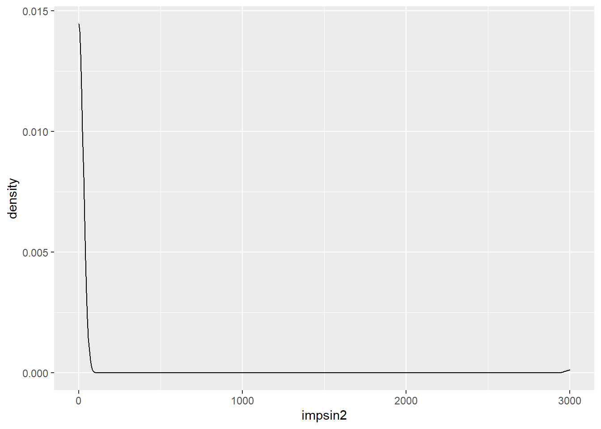
El método de mínimos cuadrados traza una función lineal que minimiza la distancia de todos los puntos presentes en los datos a esa función. No se entra en los matices algebraicos para la obtención de la recta de regresión ya que en R está implementado el método mediante la función lm.
modelo.1 <- lm(data = cost_living, formula = Cost.of.Living.Index ~ Rent.Index)Esta función es importante para conocer como se realizan los modelos en R. Evidentemente es necesario indicar los datos de entrada pero también es necesario indicar la fórmula, de ahí la importancia de conocer como será el modelo matemático. Las fórmulas siempre son de la forma variable dependiente ~ variable/s independientes, en este caso es el modelo más sencillo posible Cost.of.Living.Index ~ Rent.Index pero se puede complicar y permitir crear modelos más complejos. Para describir el modelo se emplea la función summary sobre el objeto modelo.1 creado con la función lm
summary(modelo.1)##
## Call:
## lm(formula = Cost.of.Living.Index ~ Rent.Index, data = cost_living)
##
## Residuals:
## Min 1Q Median 3Q Max
## -40.602 -7.710 -0.634 7.629 49.026
##
## Coefficients:
## Estimate Std. Error t value Pr(>|t|)
## (Intercept) 32.28338 0.92034 35.08 <2e-16 ***
## Rent.Index 0.98788 0.03058 32.30 <2e-16 ***
## ---
## Signif. codes: 0 '***' 0.001 '**' 0.01 '*' 0.05 '.' 0.1 ' ' 1
##
## Residual standard error: 11.64 on 534 degrees of freedom
## Multiple R-squared: 0.6615, Adjusted R-squared: 0.6609
## F-statistic: 1044 on 1 and 534 DF, p-value: < 2.2e-16Esta salida es relevante. Contiene información sobre la fórmula, los residuos y los coeficientes del modelo generado, en este caso, los parámetros estimados crear una función de regresión:
\[Cost.of.Living.Index = 32.28 + 0.99·Rent.Index + \epsilon\] ¿Estos parámetros son adecuados?
Inferencia sobre los parámetros. En el apartado de la inferencia se parte con el test F de regresión que está en la última línea del summary, de hecho siempre se comenzará con esa última línea. Esa prueba F parte de la hipótesis nula de igualdad de medias y se obtiene un p-valor de 0 por lo que se puede rechazar la hipótesis nula, las medias son distintas, se puede dar un modelo de regresión lineal. Una vez comprobada la posibilidad de que exista un modelo de regresión la estimación de los parámetros tienen asociados una prueba t cuya \(H_0\) es \(\beta_i=0\), es decir, el parámetro no aporta nada al modelo. Como es un modelo aditivo cuanto más próximo a 0 sea ese parámetro \(\beta\) menos aporta, en el caso concreto que está ilustrando este apartado se tiene que el
(intercepto), el \(\beta_0\), tiene un p-valor asociado al test de 0, por lo que se rechaza la hipótesis de “el parámetro no aporta al modelo”, igual sucede con el parámetro asociado aRent.Index, el \(\beta_1\). Ambos parámetros están aportando al modelo pero, además, hay otro elemento en la salida que tiene importancia, elAdjusted R-squaredel \(R^2\) que es una medida sobre la calidad del modelo que se verá más adelante.Diagnóstico del modelo. Además del \(R^2\) es necesario validar y diagnóstica si se cumplen todas las hipótesis del modelo lineal:
- Linealidad. Para estudiar esta situación en el modelo de regresión lineal simple puede servir el gráfico de puntos visto con anterioridad. En este primer ejemplo se va a emplear directamente la recta de regresión creada con el modelo. Para representar gráficamente esa recta es necesario predecir, saber que valores está arrojando la recta de regresión y para ello en R está la función
predictsobre el objeto modelo con la variable que participa en el modelo.
estimacion.modelo.1 <- predict(object=modelo.1, data=cost_living$Rent.Index)
estimacion.modelo.1 <- data.frame(prediccion_Cost.of.Living = estimacion.modelo.1)
estimacion.modelo.1$Rent.Index = cost_living$Rent.Index
head(estimacion.modelo.1)## prediccion_Cost.of.Living Rent.Index
## 1 134.06419 103.03
## 2 94.14415 62.62
## 3 77.86396 46.14
## 4 82.02291 50.35
## 5 71.02786 39.22
## 6 100.60485 69.16Esta tarea de generar los datos estimados por la función matemática es escorear unos datos, es decir, escorear es obtener las estimaciones del modelo para unos datos. En el ejemplo es aplicar la función \(Y = 32.28 + 0.99·Rent.Index\) a una serie de datos que permita crear un scoring o una variable predicha. En este caso se han escoreado los propios datos participantes en el modelo y permiten visualizar la recta de regresión en los gráficos de dispersión.
cost_living %>% ggplot(aes(x = Rent.Index, y = Cost.of.Living.Index)) +
geom_point() +
geom_line(data = estimacion.modelo.1,
aes(x=Rent.Index, y=prediccion_Cost.of.Living), color="red") +
ggtitle("Estudio de la linealidad")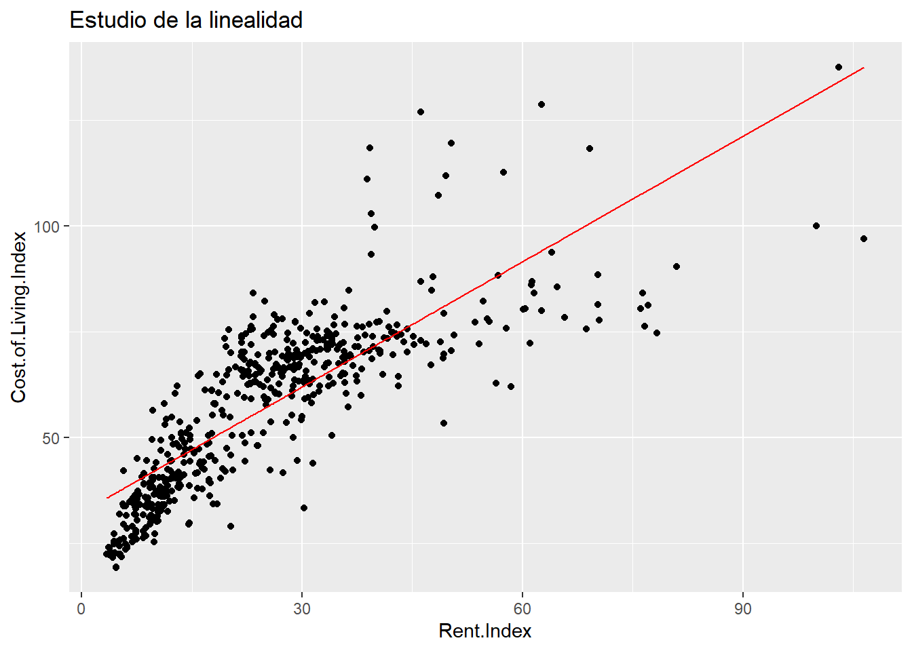
¿Una recta describe esta nube de puntos? No lo parece, será necesario buscar una manera de salvar esa “no linealidad”. Con una sola variable independiente es sencillo comprobar la linealidad, si se tienen más variables no será tan sencillo y por eso son fundamentales los dos siguientes supuestos que se basan en los residuos del modelo de regresión. Los residuos son la distancia entre esa recta de regresión y el dato real, son la diferencia entre lo obtenido por el modelo y lo observado. Si esa distancia no es normal y si no hay independencia entre los residuos es que el modelo lineal no está describiendo el comportamiento. Por lo que los otros supuestos a tener en cuenta son:
Homocedasticidad. La varianza de los residuos ha de ser 0.
Normalidad de residuos. Los residuos producidos por el modelo se distribuyen normalmente, nada afecta en mayor medida a un residuo.
Independencia de residuos. No existe correlación entre los residuos producidos por el modelo.
Para diagnosticar los residuos se tienen los gráficos de diagnóstico de los residuos:
par(mfrow = c(2, 2))
plot(modelo.1)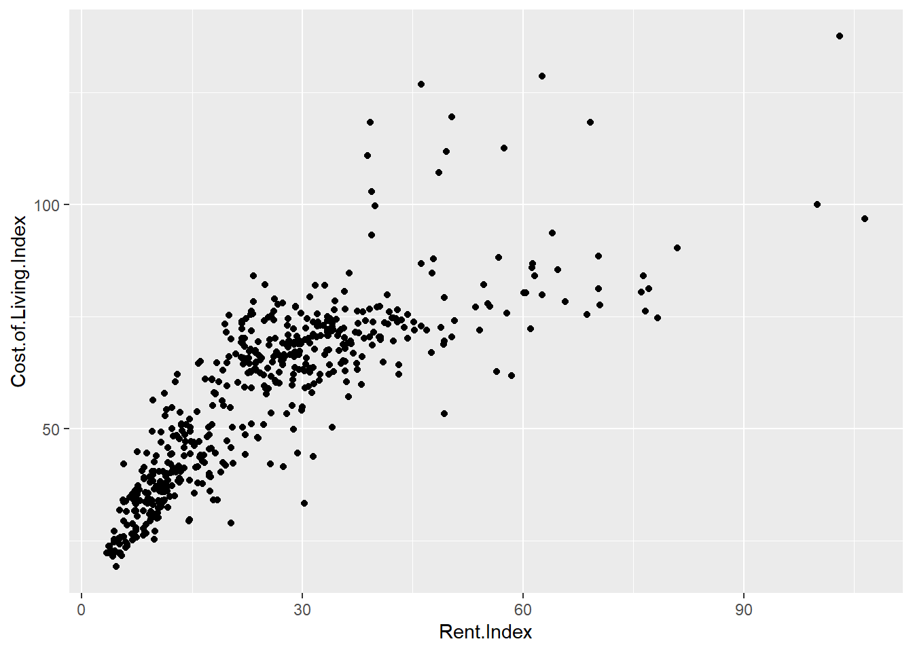
En estos gráficos los datos deben estar en el entorno de esas líneas discontinuas sin que exista un patrón específico, no se entra en mayor profundidad porque es evidente que no se cumple, esta es una situación que suele dar lugar cuando se estudian teóricamente estos modelos.
La variable dependiente no sigue una distribución normal y no se cumplen los supuestos, no hay modelo. Esta impostura teórica hace que el científico de datos “huya” de los modelos lineales. Pero el coeficiente de correlación es 0.8, el \(R^2\) es 0.66 y los parámetros son significativos, hay modelo, lo que sucede es que no está recogiendo el total del efecto lineal de la variable dependiente, el modelo es claramente mejorable.
13.2 El coeficiente de determinación o \(R^2\)
El \(R^2\) ha salido en varias ocasiones en el apartado anterior, es necesario conocer como funciona y las limitaciones que tiene a la hora de medir la capacidad predictiva del modelo. El coeficiente de determinación o \(R^2\) es una medida de la varianza de la la variable dependiente que recoge la recta de regresión. Es un valor que va desde 0 a 1 donde 0 indica que el modelo es incapaz de medir la variabilidad de la variable dependiente y 1 significa que está recogiendo la totalidad de la variabilidad. Evidentemente, cuanto más próximo a 1 sea ese coeficiente más varianza recoge el modelo, mejor será ese modelo. El \(R^2\) mide lo alejadas que están las observaciones de una recta, no indica que no exista relación lineal, nubes de puntos con mucha varianza pueden arrojar coeficientes de determinación menores para rectas de regresión adecuadas y eso no implica que el modelo sea malo.
El siguiente código está sacado del blog de Carlos Gil, riguroso divulgador de temas estadísticos.
n <- 3000
x <- rnorm(n)
foo <- function(sigma){
y <- 4 - .2 * x + rnorm(n, 0, sigma)
modelo <- lm(y ~ x)
datos <- data.frame(
x = x,
y = y, sigma = sigma,
r.squared = summary(modelo)$r.squared)
}
res <- do.call(
rbind,
lapply(seq(0, 2, length.out = 20), foo))
ggplot(res, aes(x = x, y = y)) + geom_point(alpha = .2) +
geom_smooth(method = "lm", col = "red") +
facet_wrap(~sigma)## `geom_smooth()` using formula 'y ~ x'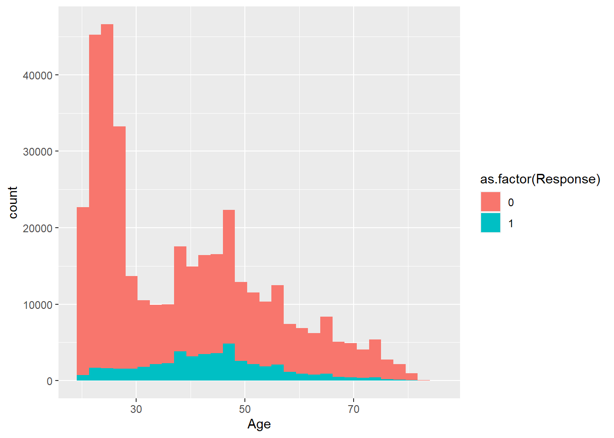
r.squared <- unique(res[, c("sigma", "r.squared")])
plot(r.squared$sigma,
r.squared$r.squared,
type = "l",
xlab = "sigma",
ylab = "r squared",
main = "r cuadrado según el error\nirreductible del modelo")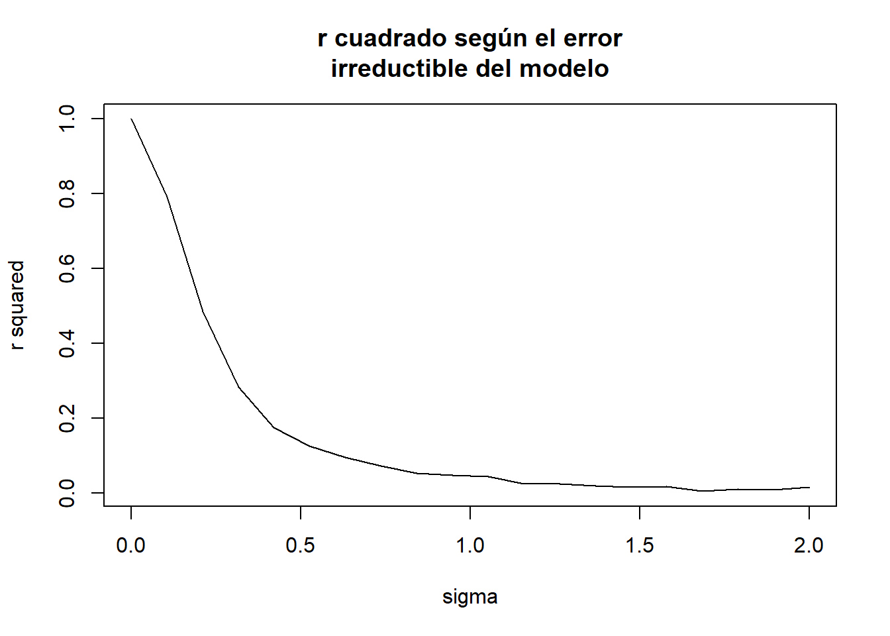
Para datos análogos el \(R^2\) se reduce en función de la varianza de la nube de puntos. Un \(R^2\) bajo no implica un mal modelo de regresión, puede implicar que la variable dependiente tenga una gran varianza. Sin embargo, un \(R^2\) alto si implica que el modelo es aceptable, ¿umbrales para establecer que es alto? Dependerá del analista y el problema.
En el summary del modelo se tiene el Múltiple R-squared y el Adjusted R-squared. El primero es el \(R^2\) y el segundo es el \(R^2\) ajustado por el número de variables presentes en el modelo. Se acostumbra a usar el ajustado por el número de variables del modelo. Se van a parecer mucho, sobre todo si se aplica el principio de parsimonia a los modelos que tendrá un apartado posterior.
13.3 Transformaciones de variables
Una variable se puede transformar para mejorar un modelo de regresión lineal, se puede transformar tanto la variable respuesta como la variable independiente. Qué es transformar una variable, se ilustran ejemplos.
library(gridExtra)
df <- data.frame(x=seq(1:1000), y=seq(1:1000))
p1 <- df %>% ggplot(aes(x = x, y = y)) + geom_line() +
ggtitle("Sin transformación")
p2 <- df %>% ggplot(aes(x = x, y = log(y))) + geom_line() +
ggtitle("Transformación logarítmica")
p3 <- df %>% ggplot(aes(x = x, y = sqrt(y))) + geom_line() +
ggtitle("Transformación raiz")
p4 <- df %>% ggplot(aes(x = x, y = asin(y/max(y)))) + geom_line() +
ggtitle("Transformación arcoseno")
grid.arrange(p1,p2,p3,p4)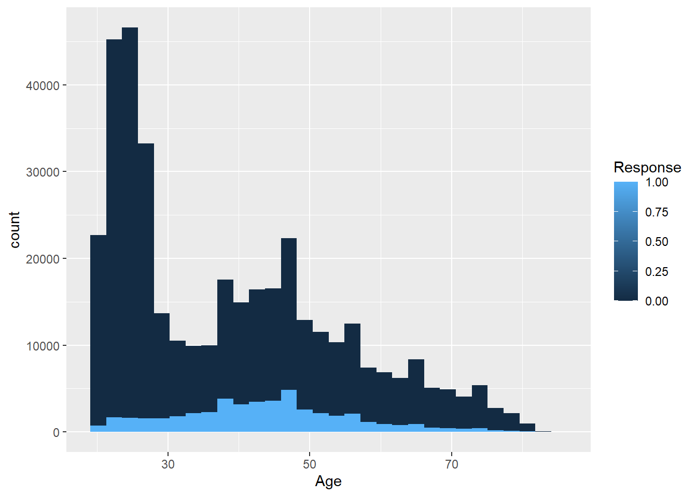
remove(p1, p2, p3, p4)Un dato lineal, si se transforma ya no es lineal, el científico de datos debe saber que un modelo lineal es una función lineal de su respuesta, pero no es lineal frente a sus parámetros. Puede recoger situaciones no lineales y no es necesario emplear complejos algoritmos para aislar esos comportamientos sin linealidad. Viendo los gráficos anteriores y aplicando una transformación al ejemplo de trabajo.
cost_living$raiz_rent.index = sqrt(cost_living$Rent.Index)
modelo.2 <- lm(cost_living, formula = Cost.of.Living.Index ~ raiz_rent.index)
summary(modelo.2)##
## Call:
## lm(formula = Cost.of.Living.Index ~ raiz_rent.index, data = cost_living)
##
## Residuals:
## Min 1Q Median 3Q Max
## -31.849 -6.408 -0.871 5.294 47.585
##
## Coefficients:
## Estimate Std. Error t value Pr(>|t|)
## (Intercept) 5.1298 1.3964 3.674 0.000263 ***
## raiz_rent.index 10.9199 0.2781 39.265 < 2e-16 ***
## ---
## Signif. codes: 0 '***' 0.001 '**' 0.01 '*' 0.05 '.' 0.1 ' ' 1
##
## Residual standard error: 10.15 on 534 degrees of freedom
## Multiple R-squared: 0.7427, Adjusted R-squared: 0.7423
## F-statistic: 1542 on 1 and 534 DF, p-value: < 2.2e-16La prueba F indica que hay modelo, el \(R^2\) ahora se sitúa en 0.74 mejorando el dato anterior y ambos parámetros son significativos. Se realiza el scoring para pintar la recta en la nube de puntos.
estimacion.modelo.2 <- predict(object=modelo.2, data=cost_living$raiz_rent.index)
estimacion.modelo.2 <- data.frame(prediccion_Cost.of.Living = estimacion.modelo.2)
estimacion.modelo.2$Rent.Index = cost_living$Rent.Index
cost_living %>% ggplot(aes(x = Rent.Index, y = Cost.of.Living.Index)) +
geom_point() +
geom_line(data = estimacion.modelo.2,
aes(x=Rent.Index, y=prediccion_Cost.of.Living), color="red") +
ggtitle("Estudio de la linealidad")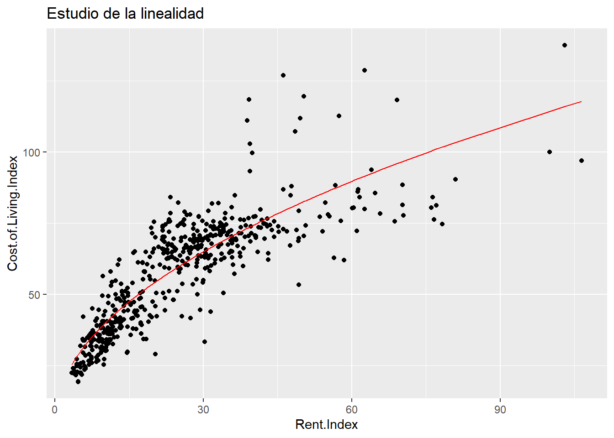
Se aprecia que la transformación recoge ese comportamiento sin linealidad, ¿lo recoge por completo? Para ello se dispone del estudio de los residuos.
par(mfrow = c(2, 2))
plot(modelo.1)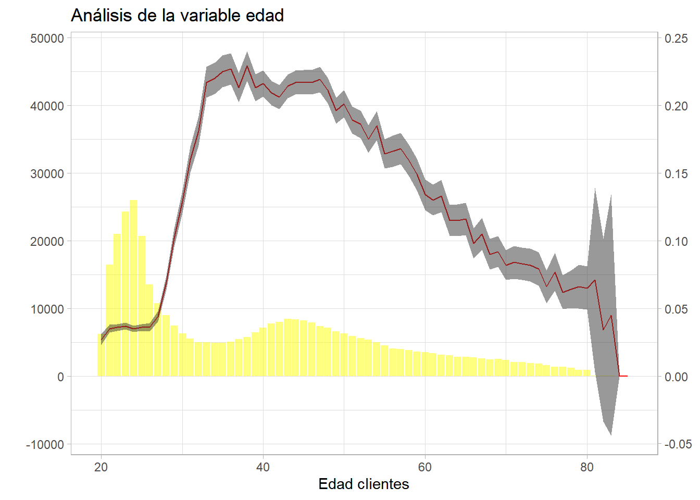
El primer gráfico recoge los residuos frente al ajuste, en estimaciones superiores a un índice de 80, -20% con respecto a NYC, hay un patrón que el modelo lineal no recoge. Lo corrobora el siguiente gráfico que estudia la normalidad de los residuos, falla en ambos extremos de la estimación pero más en estimaciones superiores. El gráfico de scale - location estudia la homocedasticidad, los residuos estudentizados deberían situarse sobre una línea central para asumir igualdad de varianza y esto no sucede. El último gráfico permite estudiar si hay observaciones extremas (outliers) que estén influyendo sobre los resultados del modelo, se identifican la observación 12 y 14:
cost_living %>% filter(row_number() %in% c(12,14))## Rank City Cost.of.Living.Index Rent.Index Cost.of.Living.Plus.Rent.Index
## 1 12 New York, NY, United States 100.00 100.00 100.00
## 2 14 San Francisco, CA, United States 96.88 106.49 101.43
## Groceries.Index Restaurant.Price.Index Local.Purchasing.Power.Index raiz_rent.index
## 1 100.00 100.00 100.00 10.0000
## 2 101.93 94.58 125.95 10.3194La propia Nueva York y San Francisco con un precio disparatado de los alquileres están afectando al modelo y se podrían considerar outliers y podrían requerir un tratamiento especial. Teóricamente el modelo no sirve porque no se cumplen las hipótesis, pero no es un mal modelo, el problema es que hay ciertas situaciones que no recoge. Pero el modelo no se puede descartar da igual lo que diga la teoría, el científico de datos tiene que separar la señal del ruido y es evidente que una simple función matemática está aislando el funcionamiento de la variable en estudio.
13.4 Tramificación de variables en modelos lineales
Además de transformar una variable también es posible tramificarla para recoger mejor el comportamiento de una variable que dependa de ella. A lo largo de todo el ensayo se ha hecho mención a la importancia que tiene esta labor y los modelos lineales no son una excepción. A continuación se realiza ese ejercicio.
cost_living <- cost_living %>% mutate(fr_Rent.Index = case_when(
Rent.Index <= 15 ~ "1. <=15",
Rent.Index <= 30 ~ "2. 16-30",
Rent.Index <= 45 ~ "3. 31-45",
Rent.Index <= 60 ~ "4. 46-60",
TRUE ~ "5. mas de 60"))
modelo.3 <- lm(cost_living, formula = Cost.of.Living.Index ~ fr_Rent.Index)
summary(modelo.3)##
## Call:
## lm(formula = Cost.of.Living.Index ~ fr_Rent.Index, data = cost_living)
##
## Residuals:
## Min 1Q Median 3Q Max
## -37.544 -7.215 0.157 5.723 48.804
##
## Coefficients:
## Estimate Std. Error t value Pr(>|t|)
## (Intercept) 36.0118 0.8379 42.98 <2e-16 ***
## fr_Rent.Index2. 16-30 24.7727 1.1784 21.02 <2e-16 ***
## fr_Rent.Index3. 31-45 34.8626 1.3226 26.36 <2e-16 ***
## fr_Rent.Index4. 46-60 45.3337 2.2439 20.20 <2e-16 ***
## fr_Rent.Index5. mas de 60 52.7442 2.3934 22.04 <2e-16 ***
## ---
## Signif. codes: 0 '***' 0.001 '**' 0.01 '*' 0.05 '.' 0.1 ' ' 1
##
## Residual standard error: 11.21 on 531 degrees of freedom
## Multiple R-squared: 0.6877, Adjusted R-squared: 0.6854
## F-statistic: 292.4 on 4 and 531 DF, p-value: < 2.2e-16De un modo muy rápido se ha trameado la variable respuesta en 5 tramos y el modelo ha generado 4 parámetros más el término independiente con un \(R^2\) de 0.68 que mejora incluso al que se obtenía con el modelo inicial. Se realiza el scoring de modelo para ver como es el modelo resultante sobre la nube de puntos.
estimacion.modelo.3 <- predict(object=modelo.3, data=cost_living$fr_Rent.Index)
estimacion.modelo.3 <- data.frame(prediccion_Cost.of.Living = estimacion.modelo.3)
estimacion.modelo.3$Rent.Index = cost_living$Rent.Index
cost_living %>% ggplot(aes(x = Rent.Index, y = Cost.of.Living.Index)) +
geom_point() +
geom_line(data = estimacion.modelo.3,
aes(x=Rent.Index, y=prediccion_Cost.of.Living), color="red") +
ggtitle("Estudio del modelo tramificado")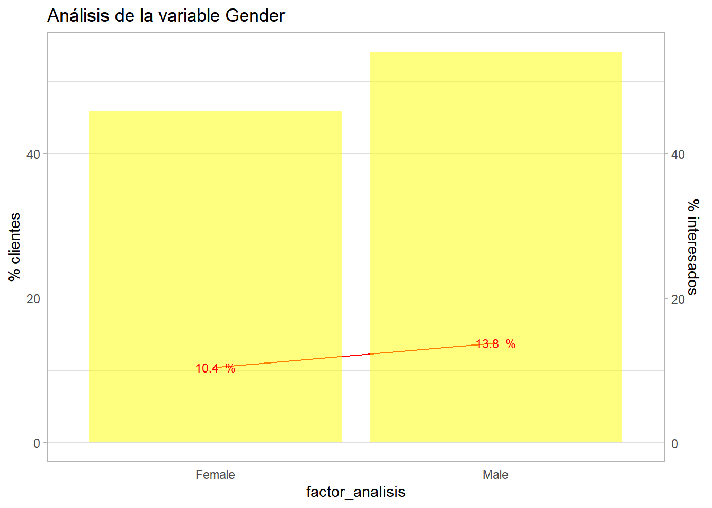
La mera tramificación de la variable, convertir una variable numérica en un factor, está salvando la linealidad pero se está trabajando con más de un parámetro, concretamente con 4 más el término independiente. Ya no se tiene una regresión linea simple ahora se tiene una regresión lineal múltiple y un parámetro ha pasado a crear 4, pero, ¿por qué la salida de R ofrece 4 parámetros cuando se ha tramificado la variable en 5 partes? Porque 4 parámetros son suficientes.
El modelo planteado tendría la siguiente forma:
\(Y = \beta_0 + \beta_1*Rent.Index = 1. <=15 + \beta_2*Rent.Index = 2. 16-30 + \beta_3*Rent.Index = 3. 31-45 + \beta_4*Rent.Index = 4. 46-60 + \beta_5*Rent.Index = 5. mas de 60\)
Donde cada \(X_i\) es una variable que toma valores 0 y 1 en función del nivel del factor que tiene cada observación. Pero la salida de R es:
modelo.3$coefficients## (Intercept) fr_Rent.Index2. 16-30 fr_Rent.Index3. 31-45 fr_Rent.Index4. 46-60
## 36.01184 24.77269 34.86257 45.33367
## fr_Rent.Index5. mas de 60
## 52.74416¿Dónde está el nivel fr_Rent.Index1. <=15? En realidad no hace falta, porque los modelos lineales que incluyen variables divididas en categorías crean variables “dummy”, es decir, si la observación pertenece a esa categoría toma un 1 en caso contrario 0. De ese modo, si la ciudad del conjunto de datos tiene un Rent.Index de 18 estaría en la categoría “2. 16-30” y el scoring (la predicción) para ese valor sería \(Y=36+24.77*1=60.77\) porque pertenece a la categoría 2 luego se multiplica por su parámetro, si pertenece a la categoría 1 fr_Rent.Index1. <=15 que no tiene parámetro entonces se le aplica el término independiente 36 (como aparece en el gráfico anterior).
Como se ha esbozado con anterioridad, al transformar la variable a tramos, una variable en un modelo de regresión clásico es capaz de recoger efectos no lineales, pero está sacrificando algo: sencillez. Un modelo, cuantos más parámetros tenga más aumenta su complejidad y esto no es siempre positivo como se verá en capítulos posteriores.
13.5 Factores en modelos de regresión
Este apartado es análogo a lo anteriormente tratado, pero se insiste en ello para que el científico de datos interprete correctamente los parámetros de un modelo de regresión. ¿Es distinto el valor del índice de costo en ciudades de EEUU, España y el resto del mundo?
cost_living <- cost_living %>% mutate(pais = case_when(
grepl('United States', City)>0 ~ 'USA',
grepl('Spain', City)>0 ~ 'España',
TRUE ~ 'Resto'))
cost_living %>% ggplot(aes(x=Cost.of.Living.Index, fill=pais, color=pais, group=pais)) +
geom_density(alpha=0.3)
Se crea la variable empleando la función grepl que pertenece a las funciones de las regular expressions y que sirven para la manipulación de texto, en este caso busca la existencia de patrones en cadenas de texto. Se aprecian comportamientos distintos para las distribuciones, ¿dónde se sitúan las medias?
cost_living %>% group_by(pais) %>%
summarise(media_indice = mean(Cost.of.Living.Index)) ## # A tibble: 3 x 2
## pais media_indice
## <chr> <dbl>
## 1 España 55.5
## 2 Resto 53.6
## 3 USA 70.9Con los datos disponibles, ¿son distintas las medias? ¿A qué recuerda esta cuestión? El modelo lineal ayuda a resolver estos análisis y además, los parámetros dicen mucho acerca de las variables.
lm(data=cost_living, Cost.of.Living.Index~pais)##
## Call:
## lm(formula = Cost.of.Living.Index ~ pais, data = cost_living)
##
## Coefficients:
## (Intercept) paisResto paisUSA
## 55.48 -1.89 15.42Como se observa el término independiente es exactamente la media del índice para España, la primera en el orden lexicográfico, si a ese término independiente se le resta 1.89 se tiene la media del Resto del mundo y si a la media de España se le suma 15.42 se tiene la media del índice para los EEUU. Eso es un parámetro de la regresión lineal para el nivel de un factor y el test permite determinar si es significativo en el modelo, es decir, si esas medias son diferentes.
summary(lm(data=cost_living, Cost.of.Living.Index~pais))##
## Call:
## lm(formula = Cost.of.Living.Index ~ pais, data = cost_living)
##
## Residuals:
## Min 1Q Median 3Q Max
## -34.332 -14.222 -2.211 13.831 83.968
##
## Coefficients:
## Estimate Std. Error t value Pr(>|t|)
## (Intercept) 55.482 5.416 10.245 < 2e-16 ***
## paisResto -1.890 5.494 -0.344 0.73098
## paisUSA 15.425 5.703 2.705 0.00706 **
## ---
## Signif. codes: 0 '***' 0.001 '**' 0.01 '*' 0.05 '.' 0.1 ' ' 1
##
## Residual standard error: 18.76 on 533 degrees of freedom
## Multiple R-squared: 0.1221, Adjusted R-squared: 0.1188
## F-statistic: 37.07 on 2 and 533 DF, p-value: 8.471e-16Como se intuía la agrupación de países del Resto del mundo no es un parámetro significativo, sin embargo, las ciudades de EEUU si tienen una media distinta estableciendo el p-valor habitual. Evidentemente el \(R^2\) es muy bajo, pero este ejercicio también sirve al científico de datos para crear nuevas variables a partir de las disponibles y no ser un mero ejecutor de funciones informáticas.
13.6 Modelo de regresión lineal múltiple
Ya se vio en el capítulo anterior que el modelo de regresión lineal múltiple es \(Y = \beta_0 + X_1\beta_0 + X_2\beta_2 + ... + X_i\beta_i + \epsilon\) con las mismas consideraciones teóricas que tiene el modelo de regresión simple:
Escribir el modelo matemático
Estimación de los parámetros del modelo
Inferencia sobre los parámetros del modelo
Diagnóstico del modelo
Pero hay que añadir una nueva, la no relación lineal entre las variables independientes. Cuando esto no se produce, es decir, hay relación lineal entre las variables independientes, entonces se tiene multicolinealidad. Esto es debido a la propia solución algebraica del modelo lineal múltiple, matricialmente se define como \(Y=\beta X + \epsilon\) la estimación de los parámetros es \(\beta = [X^tX]^-1\) si existe alguna relación lineal entre alguna de las variables independientes \(X\) entonces \([X^tX]=0\) y una división por 0 es un problema. Por los motivos antes expuestos uno de los primeros pasos a la hora de hacer un modelo de regresión lineal múltiple será estudiar las correlaciones.
Continuando con el ejemplo anterior se plantea el mismo modelo de regresión lineal pero se van a añadir nuevas variables entre las disponibles por lo que ahora la variable Cost.of.Living.Index irá en función del resto de indicadores disponibles. El primer paso será estudiar gráficamente la relación lineal de la variable dependiente frente a las variables regresoras:
grafico_puntos <- function(varib){
cost_living %>% ggplot(aes_string(x = varib, y = 'Cost.of.Living.Index')) +
geom_point() + ggtitle(paste0("Índice frente a ",varib))}
p1 <- grafico_puntos("Rent.Index")
p2 <- grafico_puntos("Cost.of.Living.Plus.Rent.Index")
p3 <- grafico_puntos("Groceries.Index")
p4 <- grafico_puntos("Restaurant.Price.Index")
p5 <- grafico_puntos("Local.Purchasing.Power.Index")
grid.arrange(p1,p2,p3,p4,p5)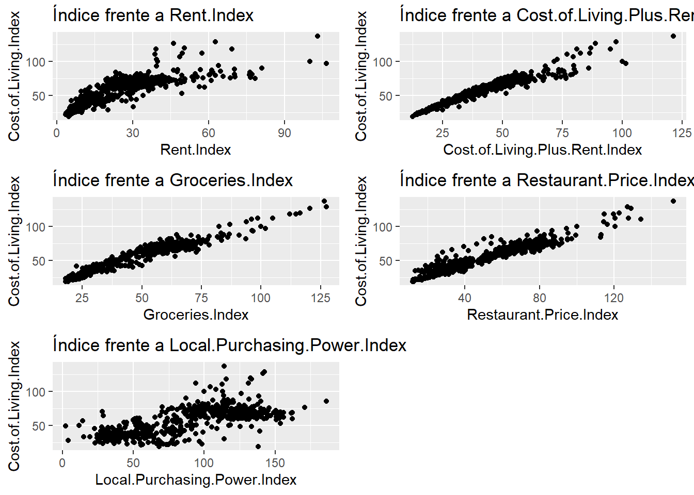
Estos gráficos ya anticipan problemas. El índice está muy relacionado con todas las variables que se van a emplear en la regresión, no parece mala noticia, sin embargo, esa relación es muy parecida para todas las variables por lo que es imprescindible analizar si existe correlación entre las variables independientes. Para estudiar las correlaciones se dispone del coeficiente de correlación al que se hizo mención en el capítulo 11. Pero, se va a presentar una visualización que permite estudiar la correlación entre todas las variables que van a participar en el estudio, el gráfico de correlaciones.
library(corrplot)## corrplot 0.92 loadedmatriz_correlaciones <- cor(cost_living[,3:8])
corrplot(matriz_correlaciones, title = "Gráfico de correlaciones", method = "square", addCoef.col = "white")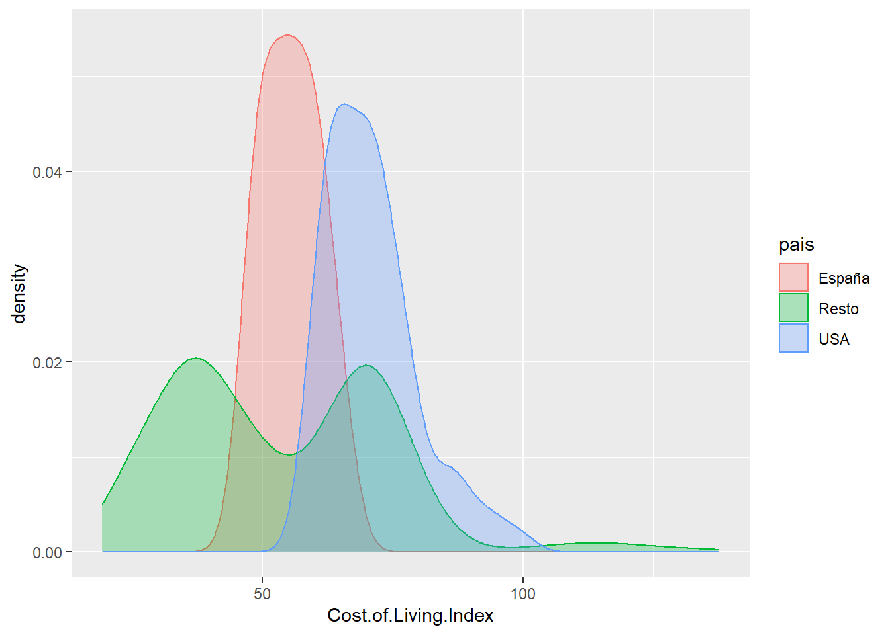
Este gráfico se obtiene con la librería corrplot y sólo es necesario crear previamente la matriz de correlaciones con todas las variables. Se observa que la variable Cost.of.Living.Index tiene una correlación muy alta con muchas de las variables que van a explicar su comportamiento pero es que estas variables entre sí también tienen una alta correlación. Esto ya da pistas sobre la posible existencia de la multicolinealidad. Además, se va a prescindir de la variable Cost.of.Living.Plus.Rent.Index porque es el propio índice más Rent.Index y puede distorsionar el modelo. Con estas advertencias y consideraciones, se plantea el modelo:
modelo.4 <- lm(data=cost_living, formula=Cost.of.Living.Index ~ Rent.Index + Groceries.Index + Restaurant.Price.Index + Local.Purchasing.Power.Index)
summary(modelo.4)##
## Call:
## lm(formula = Cost.of.Living.Index ~ Rent.Index + Groceries.Index +
## Restaurant.Price.Index + Local.Purchasing.Power.Index, data = cost_living)
##
## Residuals:
## Min 1Q Median 3Q Max
## -7.0406 -2.1791 -0.1758 1.7269 11.6330
##
## Coefficients:
## Estimate Std. Error t value Pr(>|t|)
## (Intercept) 8.719625 0.409760 21.280 < 2e-16 ***
## Rent.Index 0.006692 0.014075 0.475 0.63466
## Groceries.Index 0.564519 0.014620 38.613 < 2e-16 ***
## Restaurant.Price.Index 0.395024 0.011109 35.558 < 2e-16 ***
## Local.Purchasing.Power.Index -0.015555 0.005021 -3.098 0.00205 **
## ---
## Signif. codes: 0 '***' 0.001 '**' 0.01 '*' 0.05 '.' 0.1 ' ' 1
##
## Residual standard error: 3.023 on 531 degrees of freedom
## Multiple R-squared: 0.9773, Adjusted R-squared: 0.9771
## F-statistic: 5711 on 4 and 531 DF, p-value: < 2.2e-16Se dispone de un modelo con un excepcional \(R^2\) donde la variable Rent.Index es la única que no supera el test de \(\beta_i=0\) algo que lo indica el propio valor del parámetro, muy próximo a 0. El resto de variables si superan el test. Con estas consideraciones es necesario replantear el modelo:
modelo.5 <- lm(data=cost_living, formula=Cost.of.Living.Index ~ Groceries.Index + Restaurant.Price.Index + Local.Purchasing.Power.Index)
summary(modelo.5)##
## Call:
## lm(formula = Cost.of.Living.Index ~ Groceries.Index + Restaurant.Price.Index +
## Local.Purchasing.Power.Index, data = cost_living)
##
## Residuals:
## Min 1Q Median 3Q Max
## -7.0382 -2.0809 -0.1563 1.7731 11.8113
##
## Coefficients:
## Estimate Std. Error t value Pr(>|t|)
## (Intercept) 8.654063 0.385580 22.444 < 2e-16 ***
## Groceries.Index 0.567363 0.013330 42.562 < 2e-16 ***
## Restaurant.Price.Index 0.396296 0.010774 36.782 < 2e-16 ***
## Local.Purchasing.Power.Index -0.015296 0.004987 -3.067 0.00227 **
## ---
## Signif. codes: 0 '***' 0.001 '**' 0.01 '*' 0.05 '.' 0.1 ' ' 1
##
## Residual standard error: 3.021 on 532 degrees of freedom
## Multiple R-squared: 0.9773, Adjusted R-squared: 0.9771
## F-statistic: 7626 on 3 and 532 DF, p-value: < 2.2e-16Ya se dispone de un modelo con todos los parámetros significativos, aunque Local.Purchasing.Power.Index no sería significativa si se fija un umbral más bajo de 0.002 ya que quedaría fuera de la región de aceptación. Con el primer modelo y teniendo en cuenta el anterior estudio de la correlación se torna necesario analizar la posible presencia de multicolinealidad. Hay diversos métodos para realizar esta tarea y se opta por ilustrar el ejemplo con el método VIF (Variance Inflation Factor). Si hay multicolinealidad \([X^tX]=0\) está “inflando” la varianza, ¿cuánto infla la varianza una variable dentro del modelo? Para determinar como está afectando se va a utilizar la librería de R car
library(car)
vif(modelo.5)## Groceries.Index Restaurant.Price.Index Local.Purchasing.Power.Index
## 3.887894 4.283852 2.000066La función vif calcula cuanto está inflando la varianza del modelo cada variable, valores por encima de 8 indican un problema, valores por encima de 4 indican la necesidad de analizar las variables en el modelo. En este modelo sólo Restaurant.Price.Index está causando problemas, está en manos del científico de datos eliminar la variable del modelo o transformarla para evitar problemas pero, como siempre, tiene que argumentar su eliminación. En este caso se opta por dejar el modelo.5 como modelo definitivo y por último es necesario estudiar el comportamiento de los residuos.
par(mfrow = c(2, 2))
plot(modelo.5)
Desde el punto de vista teórico se dispone de un modelo aceptable, hay linealidad, pero los residuos “pierden” normalidad y pierden homogeneidad de varianza en valores altos. Se pueden identificar los registros, las ciudades que están causando problemas en el modelo.
estimacion.modelo.5 <- predict(object=modelo.5, data=cost_living)
estimacion.modelo.5 <- cost_living %>% mutate(estimacion = estimacion.modelo.5)
estimacion.modelo.5 %>% filter(estimacion>110) %>%
select(City, Cost.of.Living.Index, estimacion, Groceries.Index, Restaurant.Price.Index,
Local.Purchasing.Power.Index)## City Cost.of.Living.Index estimacion Groceries.Index Restaurant.Price.Index
## 1 Hamilton, Bermuda 137.56 138.8588 126.56 151.77
## 2 Zurich, Switzerland 128.65 129.1149 127.35 127.14
## 3 Basel, Switzerland 126.89 125.9851 120.44 129.10
## 4 Lausanne, Switzerland 119.62 121.3159 116.35 122.83
## 5 Bern, Switzerland 118.42 117.3921 114.54 114.86
## 6 Geneva, Switzerland 118.33 117.6710 112.08 119.78
## 7 Reykjavik, Iceland 112.57 113.7897 98.53 127.87
## 8 Lugano, Switzerland 111.88 113.9356 104.85 120.62
## 9 Stavanger, Norway 111.00 114.7029 95.97 134.55
## Local.Purchasing.Power.Index
## 1 114.19
## 2 142.39
## 3 141.48
## 4 132.58
## 5 115.48
## 6 133.47
## 7 94.21
## 8 131.26
## 9 112.62Muchas ciudades suizas están causando problemas en el modelo, parece que la estimación siempre está por encima probablemente debido al alto coste de la alimentación. En este caso el análisis de los residuos está ofreciendo un comportamiento interesante en los datos y por este motivo el científico de datos debe estudiar esta diferencia entre lo estimado y lo real porque las observaciones que no ajustan correctamente también pueden ofrecer información al análisis.
13.7 Métodos de selección de variables
En el apartado anterior se han introducido los modelos de regresión con múltiples variables, la selección de éstas se ha llevado a cabo en base a los criterios del analista. Se recomienda que el científico de datos participe en todo el proceso de modelización pero existen situaciones en las que se disponen de multitud de variables y ese análisis pormenorizado puede convertirse en ardua tarea. Por ello, es necesario conocer los métodos automáticos de selección de variables. En los modelos de regresión se plantean 3 formas de seleccionar variables, el método fordward, método backward y método stepwise.
En este ensayo se van a ilustrar los tres métodos basando la capacidad predictiva de cada método en el criterio de información de Akaike conocido como AIC. Al igual que el \(R^2\) el AIC es una medida de lo correcto que es el ajuste pero está ponderado por el número de parámetros del modelo, sin entrar en aspectos teóricos cuanto menor es el AIC mejor es el modelo y si una variable no disminuye el AIC, no lo mejora sustancialmente, esta variable será prescindible.
13.7.1 Método fordward
Se parte del modelo más sencillo posible y a éste se le irán introduciendo variables que vayan mejorando el AIC. La fórmula del modelo más sencillo posible será:
inicio <- formula(Cost.of.Living.Index~1)La fórmula del modelo más completo posible será:
final <- formula(Cost.of.Living.Index ~ Rent.Index + Groceries.Index + Restaurant.Price.Index + Local.Purchasing.Power.Index) Partiendo del inicio paso a paso se llegará al modelo seleccionado mediante la dirección fordward. Para realizar esta tarea se emplea la librería MASS.
library(MASS)
modelo_mas_sencillo <- lm(inicio , data = cost_living)
modelo_forward<- stepAIC(modelo_mas_sencillo, direction = "forward", trace = T, scope = final)## Start: AIC=3211.62
## Cost.of.Living.Index ~ 1
##
## Df Sum of Sq RSS AIC
## + Groceries.Index 1 195537 18141 1891.7
## + Restaurant.Price.Index 1 192141 21537 1983.7
## + Rent.Index 1 141349 72329 2633.0
## + Local.Purchasing.Power.Index 1 98756 114921 2881.2
## <none> 213677 3211.6
##
## Step: AIC=1891.68
## Cost.of.Living.Index ~ Groceries.Index
##
## Df Sum of Sq RSS AIC
## + Restaurant.Price.Index 1 13199.0 4941.9 1196.7
## + Rent.Index 1 1130.8 17010.2 1859.2
## + Local.Purchasing.Power.Index 1 935.6 17205.4 1865.3
## <none> 18140.9 1891.7
##
## Step: AIC=1196.66
## Cost.of.Living.Index ~ Groceries.Index + Restaurant.Price.Index
##
## Df Sum of Sq RSS AIC
## + Local.Purchasing.Power.Index 1 85.853 4856.1 1189.3
## <none> 4941.9 1196.7
## + Rent.Index 1 0.180 4941.7 1198.6
##
## Step: AIC=1189.26
## Cost.of.Living.Index ~ Groceries.Index + Restaurant.Price.Index +
## Local.Purchasing.Power.Index
##
## Df Sum of Sq RSS AIC
## <none> 4856.1 1189.3
## + Rent.Index 1 2.0664 4854.0 1191.0Con trace = T se indica que se puedan ver los pasos seguidos en el proceso, inicialmente entra la variable Groceries.Index, seguida de Restaurant.Price.Index que reduce lo suficiente el AIC y por último Local.Purchasing.Power.Index con una reducción del AIC mucho menor que la anterior pero el modelo cada vez era más completo. El modelo resultante es análogo al planteado de forma manual con anterioridad.
summary(modelo_forward)##
## Call:
## lm(formula = Cost.of.Living.Index ~ Groceries.Index + Restaurant.Price.Index +
## Local.Purchasing.Power.Index, data = cost_living)
##
## Residuals:
## Min 1Q Median 3Q Max
## -7.0382 -2.0809 -0.1563 1.7731 11.8113
##
## Coefficients:
## Estimate Std. Error t value Pr(>|t|)
## (Intercept) 8.654063 0.385580 22.444 < 2e-16 ***
## Groceries.Index 0.567363 0.013330 42.562 < 2e-16 ***
## Restaurant.Price.Index 0.396296 0.010774 36.782 < 2e-16 ***
## Local.Purchasing.Power.Index -0.015296 0.004987 -3.067 0.00227 **
## ---
## Signif. codes: 0 '***' 0.001 '**' 0.01 '*' 0.05 '.' 0.1 ' ' 1
##
## Residual standard error: 3.021 on 532 degrees of freedom
## Multiple R-squared: 0.9773, Adjusted R-squared: 0.9771
## F-statistic: 7626 on 3 and 532 DF, p-value: < 2.2e-1613.7.2 Método backward
El sentido contrario al método fordward, se parte del modelo completo y se determina que variable es candidata a salir porque el AIC del modelo no se ve alterado.
modelo_completo <- lm(data=cost_living, formula = final)
modelo_backward<- stepAIC(modelo_completo, direction = "backward", trace = T, scope = final)## Start: AIC=1191.04
## Cost.of.Living.Index ~ Rent.Index + Groceries.Index + Restaurant.Price.Index +
## Local.Purchasing.Power.Index
##
## Df Sum of Sq RSS AIC
## - Rent.Index 1 2.1 4856.1 1189.3
## <none> 4854.0 1191.0
## - Local.Purchasing.Power.Index 1 87.7 4941.7 1198.6
## - Restaurant.Price.Index 1 11557.9 16411.9 1842.0
## - Groceries.Index 1 13629.4 18483.5 1905.7
##
## Step: AIC=1189.26
## Cost.of.Living.Index ~ Groceries.Index + Restaurant.Price.Index +
## Local.Purchasing.Power.Index
##
## Df Sum of Sq RSS AIC
## <none> 4856.1 1189.3
## - Local.Purchasing.Power.Index 1 85.9 4941.9 1196.7
## - Restaurant.Price.Index 1 12349.3 17205.4 1865.3
## - Groceries.Index 1 16535.5 21391.5 1982.0Se aprecia que el AIC sin la variable Rent.Index se queda en 1189.3 por lo que es candidata a ser eliminada. En el segundo paso ninguna variable es candidata a salir por lo que se paran las iteraciones y se crea un modelo final igual a los obtenidos con anterioridad.
13.7.3 Método stepwise
Este método de selección de variables es una combinación de los dos anteriores, se parte del modelo y se evalúa que variable es candidata a salir y de las variables eliminadas se vuelve a evaluar si es candidata a entrar en el modelo.
modelo_combinado <- stepAIC(modelo_completo, trace=T, direction="both", scope=final)## Start: AIC=1191.04
## Cost.of.Living.Index ~ Rent.Index + Groceries.Index + Restaurant.Price.Index +
## Local.Purchasing.Power.Index
##
## Df Sum of Sq RSS AIC
## - Rent.Index 1 2.1 4856.1 1189.3
## <none> 4854.0 1191.0
## - Local.Purchasing.Power.Index 1 87.7 4941.7 1198.6
## - Restaurant.Price.Index 1 11557.9 16411.9 1842.0
## - Groceries.Index 1 13629.4 18483.5 1905.7
##
## Step: AIC=1189.26
## Cost.of.Living.Index ~ Groceries.Index + Restaurant.Price.Index +
## Local.Purchasing.Power.Index
##
## Df Sum of Sq RSS AIC
## <none> 4856.1 1189.3
## + Rent.Index 1 2.1 4854.0 1191.0
## - Local.Purchasing.Power.Index 1 85.9 4941.9 1196.7
## - Restaurant.Price.Index 1 12349.3 17205.4 1865.3
## - Groceries.Index 1 16535.5 21391.5 1982.0El primer paso es igual al empleado en el modelo backward saliendo Rent.Index pero no hay más candidatas a salir o a entrar por lo que se llega al mismo resultado.
Se recomienda que el científico de datos genere sus propias herramientas para la selección argumentada de variables, pero es necesario conocer estos métodos porque se presentarán situaciones en las que se tenga cientos de variables regresoras y una selección automática de variables puede ser el primer paso para elegir las variables presentes en el modelo. En cualquier caso, se recomienda no incluir un gran número de variables en los modelos de regresión.
13.8 El principio de parsimonia
El principio de parsimonia en los modelos de regresión consiste en buscar modelos con el menor número posible de parámetros ya que la presencia de múltiples parámetros puede hacer que existan relaciones lineales debidas al azar. Para ilustrar esta situación se realiza una simulación.
set.seed(12)
df <- data.frame(dependiente = rnorm(1000,100,10))
#Bucle para añadir 300 variables
for (i in 1:300){
x <- data.frame(rnorm(1000,sample(1:100,1),sample(1:50,1)))
nombre = paste("x",i,sep="")
names(x) = nombre
df=cbind(df,x)
remove(x)}
#1.000 observaciones y 300 variables
modelo_aleatorio=lm(dependiente~. ,data=df)
summary(modelo_aleatorio)##
## Call:
## lm(formula = dependiente ~ ., data = df)
##
## Residuals:
## Min 1Q Median 3Q Max
## -22.9556 -5.0359 0.0116 5.1136 26.6006
##
## Coefficients:
## Estimate Std. Error t value Pr(>|t|)
## (Intercept) 1.127e+02 6.000e+01 1.879 0.06063 .
## x1 1.617e-01 1.140e-01 1.418 0.15658
## x2 2.533e-02 1.599e-02 1.585 0.11352
## x3 1.157e-02 7.660e-03 1.510 0.13155
## x4 -6.777e-03 1.165e-02 -0.582 0.56081
## x5 3.924e-03 1.014e-02 0.387 0.69885
## x6 2.436e-03 1.492e-02 0.163 0.87038
## x7 5.526e-03 7.496e-03 0.737 0.46127
## x8 7.716e-04 9.193e-03 0.084 0.93313
## x9 -1.173e-03 1.031e-02 -0.114 0.90945
## x10 1.371e-02 1.017e-02 1.348 0.17824
## x11 -1.603e-02 1.409e-02 -1.138 0.25570
## x12 -1.208e-02 8.324e-03 -1.451 0.14724
## x13 1.703e-02 9.204e-03 1.851 0.06462 .
## x14 -1.989e-02 1.337e-02 -1.488 0.13710
## x15 -9.550e-04 7.052e-03 -0.135 0.89231
## x16 -2.693e-02 2.593e-02 -1.039 0.29932
## x17 4.742e-02 1.185e-01 0.400 0.68915
## x18 -5.601e-03 1.587e-02 -0.353 0.72427
## x19 2.195e-03 1.097e-02 0.200 0.84141
## x20 3.440e-02 2.699e-02 1.275 0.20282
## x21 3.899e-03 1.224e-02 0.319 0.75006
## x22 5.159e-02 8.891e-02 0.580 0.56190
## x23 5.733e-03 1.753e-02 0.327 0.74370
## x24 6.425e-02 6.016e-02 1.068 0.28587
## x25 -5.300e-03 7.852e-03 -0.675 0.49992
## x26 -7.158e-04 7.187e-03 -0.100 0.92069
## x27 -9.946e-03 1.042e-02 -0.954 0.34024
## x28 -2.756e-02 1.807e-02 -1.525 0.12761
## x29 -2.350e-03 8.929e-03 -0.263 0.79247
## x30 -2.583e-03 1.011e-02 -0.256 0.79834
## x31 9.562e-03 1.251e-02 0.765 0.44482
## x32 -8.080e-03 7.726e-03 -1.046 0.29601
## x33 1.161e-01 3.527e-01 0.329 0.74208
## x34 6.276e-03 1.063e-02 0.590 0.55508
## x35 -5.357e-03 6.736e-03 -0.795 0.42674
## x36 -4.659e-03 1.800e-02 -0.259 0.79585
## x37 -1.339e-01 8.949e-02 -1.497 0.13497
## x38 -3.937e-02 1.972e-02 -1.996 0.04631 *
## x39 1.781e-02 1.277e-02 1.395 0.16354
## x40 1.066e-03 8.341e-03 0.128 0.89830
## x41 2.876e-02 1.458e-02 1.972 0.04900 *
## x42 4.812e-02 3.828e-02 1.257 0.20912
## x43 -2.316e-02 1.077e-02 -2.150 0.03192 *
## x44 -8.094e-04 1.177e-02 -0.069 0.94518
## x45 3.058e-02 1.878e-02 1.628 0.10387
## x46 -1.788e-04 6.887e-03 -0.026 0.97930
## x47 -3.372e-02 1.566e-02 -2.154 0.03158 *
## x48 -2.085e-03 1.029e-02 -0.203 0.83951
## x49 -3.773e-03 1.464e-02 -0.258 0.79666
## x50 -3.924e-02 3.404e-02 -1.153 0.24950
## x51 -3.235e-01 3.466e-01 -0.933 0.35095
## x52 -1.816e-02 3.199e-02 -0.568 0.57049
## x53 7.356e-02 1.731e-01 0.425 0.67090
## x54 -6.965e-03 1.157e-02 -0.602 0.54753
## x55 -1.442e-02 1.230e-02 -1.173 0.24138
## x56 -7.507e-03 1.003e-02 -0.749 0.45428
## x57 -1.827e-03 1.423e-02 -0.128 0.89790
## x58 5.359e-03 1.543e-02 0.347 0.72842
## x59 2.935e-02 2.190e-02 1.340 0.18065
## x60 2.124e-02 8.941e-02 0.238 0.81227
## x61 1.738e-02 1.171e-02 1.485 0.13799
## x62 6.504e-04 3.968e-02 0.016 0.98693
## x63 2.030e-02 2.706e-02 0.750 0.45342
## x64 3.608e-03 3.242e-02 0.111 0.91140
## x65 -9.166e-03 1.042e-02 -0.880 0.37926
## x66 7.765e-03 1.118e-02 0.694 0.48762
## x67 1.698e-02 6.081e-02 0.279 0.78019
## x68 -1.167e-02 8.074e-03 -1.445 0.14891
## x69 8.392e-03 1.330e-02 0.631 0.52818
## x70 1.680e-02 1.594e-02 1.054 0.29206
## x71 -6.032e-03 8.569e-03 -0.704 0.48170
## x72 2.703e-03 2.122e-02 0.127 0.89866
## x73 3.115e-02 1.166e-01 0.267 0.78937
## x74 -9.760e-02 1.220e-01 -0.800 0.42401
## x75 3.263e-02 4.182e-02 0.780 0.43555
## x76 6.154e-03 1.127e-02 0.546 0.58521
## x77 1.390e-01 8.613e-02 1.614 0.10704
## x78 2.987e-03 6.852e-02 0.044 0.96524
## x79 -5.741e-03 2.651e-02 -0.217 0.82862
## x80 5.165e-04 9.710e-03 0.053 0.95759
## x81 5.921e-02 5.732e-02 1.033 0.30196
## x82 6.705e-02 3.008e-02 2.229 0.02613 *
## x83 -1.231e-02 1.914e-02 -0.643 0.52048
## x84 5.774e-03 2.257e-02 0.256 0.79815
## x85 2.292e-02 1.928e-02 1.189 0.23490
## x86 -5.571e-04 7.719e-03 -0.072 0.94249
## x87 -9.378e-02 8.936e-02 -1.049 0.29434
## x88 -2.562e-02 4.077e-02 -0.628 0.52992
## x89 -3.989e-02 1.512e-02 -2.638 0.00852 **
## x90 1.253e-02 1.246e-02 1.006 0.31494
## x91 -4.999e-04 5.217e-02 -0.010 0.99236
## x92 2.440e-01 3.576e-01 0.682 0.49530
## x93 4.566e-03 7.787e-03 0.586 0.55784
## x94 9.503e-03 5.144e-02 0.185 0.85349
## x95 -1.318e-01 1.185e-01 -1.113 0.26628
## x96 3.203e-02 1.993e-02 1.607 0.10857
## x97 1.063e-03 7.774e-03 0.137 0.89130
## x98 -4.629e-04 1.500e-02 -0.031 0.97539
## x99 9.745e-03 1.388e-02 0.702 0.48300
## x100 1.563e-02 1.643e-02 0.952 0.34162
## x101 8.165e-04 9.084e-03 0.090 0.92841
## x102 4.020e-02 3.075e-02 1.307 0.19151
## x103 2.966e-01 1.133e-01 2.618 0.00905 **
## x104 2.039e-03 1.850e-02 0.110 0.91228
## x105 2.170e-03 1.566e-02 0.139 0.88983
## x106 -5.072e-03 1.074e-02 -0.472 0.63697
## x107 8.551e-03 8.710e-03 0.982 0.32657
## x108 -1.984e-02 1.364e-02 -1.455 0.14619
## x109 6.124e-03 6.775e-03 0.904 0.36634
## x110 2.733e-01 1.760e-01 1.553 0.12092
## x111 1.094e-01 1.761e-01 0.621 0.53473
## x112 -1.090e-02 2.959e-02 -0.368 0.71277
## x113 1.104e-02 1.750e-02 0.631 0.52838
## x114 -6.011e-03 7.543e-03 -0.797 0.42578
## x115 1.063e-01 6.686e-02 1.590 0.11234
## x116 2.041e-02 3.517e-02 0.580 0.56188
## x117 1.119e-02 2.062e-02 0.543 0.58762
## x118 -5.774e-03 1.350e-02 -0.428 0.66909
## x119 7.996e-03 1.057e-02 0.756 0.44973
## x120 -1.451e-02 7.889e-03 -1.839 0.06632 .
## x121 -1.739e-02 1.163e-02 -1.496 0.13515
## x122 -1.323e-02 1.851e-02 -0.715 0.47490
## x123 5.777e-03 7.882e-03 0.733 0.46385
## x124 3.216e-01 1.188e-01 2.707 0.00695 **
## x125 -1.227e-01 3.393e-01 -0.362 0.71776
## x126 2.070e-03 6.890e-03 0.300 0.76389
## x127 -1.072e-03 1.260e-02 -0.085 0.93225
## x128 9.925e-03 2.078e-02 0.478 0.63302
## x129 1.452e-02 9.752e-03 1.489 0.13704
## x130 2.126e-02 1.054e-02 2.016 0.04413 *
## x131 8.401e-03 7.193e-03 1.168 0.24324
## x132 -1.871e-02 4.281e-02 -0.437 0.66227
## x133 -2.772e-02 1.050e-02 -2.640 0.00848 **
## x134 -6.692e-03 1.347e-02 -0.497 0.61958
## x135 -2.215e-03 8.706e-02 -0.025 0.97971
## x136 -1.108e-02 7.360e-03 -1.505 0.13277
## x137 2.064e-02 5.018e-02 0.411 0.68094
## x138 -2.459e-02 1.572e-02 -1.564 0.11819
## x139 3.443e-02 2.268e-02 1.518 0.12943
## x140 5.536e-03 1.541e-02 0.359 0.71948
## x141 8.656e-03 3.623e-02 0.239 0.81124
## x142 8.796e-03 7.378e-03 1.192 0.23358
## x143 5.975e-03 9.927e-03 0.602 0.54745
## x144 -4.070e-04 7.687e-03 -0.053 0.95779
## x145 1.985e-02 8.504e-03 2.334 0.01987 *
## x146 -1.128e-02 1.921e-02 -0.587 0.55742
## x147 -1.433e-02 8.997e-03 -1.592 0.11177
## x148 -4.362e-02 2.623e-02 -1.663 0.09673 .
## x149 -1.800e-03 1.561e-02 -0.115 0.90823
## x150 -1.129e-02 8.816e-03 -1.281 0.20070
## x151 9.841e-03 5.936e-02 0.166 0.86838
## x152 -1.358e-03 7.726e-03 -0.176 0.86049
## x153 9.585e-03 1.059e-02 0.905 0.36593
## x154 6.362e-03 1.345e-02 0.473 0.63632
## x155 7.517e-03 2.423e-02 0.310 0.75643
## x156 -4.604e-01 1.799e-01 -2.559 0.01070 *
## x157 -2.324e-02 5.197e-02 -0.447 0.65479
## x158 -1.147e-02 9.579e-03 -1.198 0.23140
## x159 6.224e-03 1.501e-02 0.415 0.67853
## x160 -1.733e-02 3.274e-02 -0.529 0.59679
## x161 -1.334e-02 7.893e-03 -1.690 0.09153 .
## x162 -6.798e-03 1.848e-02 -0.368 0.71305
## x163 -9.021e-03 1.403e-02 -0.643 0.52057
## x164 4.304e-02 1.886e-02 2.282 0.02278 *
## x165 1.224e-02 2.585e-02 0.473 0.63604
## x166 4.604e-03 1.052e-02 0.438 0.66162
## x167 -1.394e-01 8.980e-02 -1.552 0.12104
## x168 -9.716e-03 2.552e-02 -0.381 0.70357
## x169 -2.387e-02 5.955e-02 -0.401 0.68869
## x170 1.027e-02 7.272e-03 1.412 0.15826
## x171 -5.711e-04 8.418e-03 -0.068 0.94593
## x172 1.678e-02 1.155e-02 1.454 0.14651
## x173 -1.182e-02 1.078e-02 -1.096 0.27325
## x174 1.260e-02 1.770e-02 0.712 0.47690
## x175 1.277e-03 7.903e-03 0.162 0.87171
## x176 -4.963e-03 1.408e-02 -0.353 0.72455
## x177 8.829e-03 8.197e-03 1.077 0.28181
## x178 -1.005e-01 1.195e-01 -0.841 0.40046
## x179 -2.138e-02 1.062e-02 -2.014 0.04443 *
## x180 -1.185e-01 4.881e-02 -2.429 0.01541 *
## x181 8.573e-03 9.325e-03 0.919 0.35821
## x182 4.836e-02 1.173e-01 0.412 0.68030
## x183 6.555e-02 4.944e-02 1.326 0.18533
## x184 -1.086e-02 1.601e-02 -0.678 0.49770
## x185 -1.984e-03 3.176e-02 -0.062 0.95021
## x186 5.725e-04 7.369e-03 0.078 0.93810
## x187 2.995e-02 3.433e-02 0.872 0.38336
## x188 5.323e-03 8.445e-03 0.630 0.52872
## x189 -1.876e-02 9.643e-03 -1.945 0.05220 .
## x190 -6.278e-03 1.293e-02 -0.486 0.62733
## x191 5.416e-02 4.423e-02 1.224 0.22123
## x192 -6.202e-03 7.709e-03 -0.804 0.42139
## x193 -2.757e-04 1.158e-02 -0.024 0.98101
## x194 -3.940e-02 1.710e-02 -2.304 0.02153 *
## x195 -1.317e-02 1.254e-02 -1.051 0.29383
## x196 -4.070e-02 1.944e-02 -2.093 0.03667 *
## x197 3.400e-02 8.926e-02 0.381 0.70342
## x198 -2.145e-03 1.492e-02 -0.144 0.88575
## x199 3.831e-03 1.175e-02 0.326 0.74444
## [ reached getOption("max.print") -- omitted 101 rows ]
## ---
## Signif. codes: 0 '***' 0.001 '**' 0.01 '*' 0.05 '.' 0.1 ' ' 1
##
## Residual standard error: 9.369 on 699 degrees of freedom
## Multiple R-squared: 0.3326, Adjusted R-squared: 0.04621
## F-statistic: 1.161 on 300 and 699 DF, p-value: 0.05947Partiendo de datos completamente aleatorios el test F está muy próximo a 0.05 por lo que existe modelo y por si fuera poco hay variables significativas, esto sucede porque hay un gran número de parámetros y la regresión lineal no maneja bien esta situación, por este motivo, no se recomienda realizar modelos de regresión lineal con más de 10 variables independientes ya que pueden aparecer relaciones debidas al puro azar.